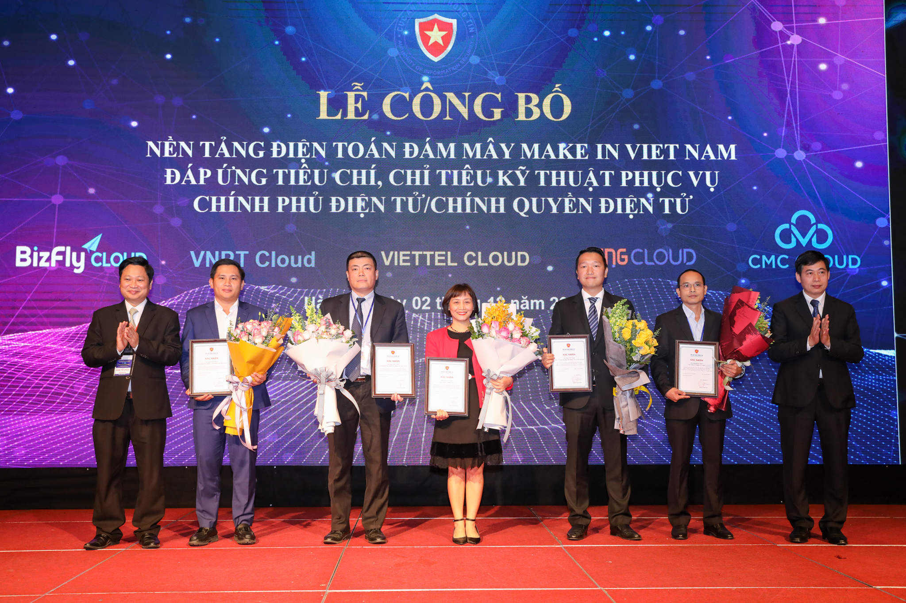

| Bộ trưởng Nguyễn Mạnh Hùng phát biểu tại Hội thảo. Ảnh: VGP/Minh Sơn |
Tại Hội thảo, triển lãm quốc tế Ngày An toàn thông tin Việt Nam 2020 với chủ đề “An toàn, an ninh mạng Make in Vietnam – Yếu tố then chốt trong chuyển đổi số quốc gia”, Bộ trưởng Bộ TT&TT Nguyễn Mạnh Hùng cho biết, rất ít nước trên thế giới làm được điều này.
“Đây là tự hào của Việt Nam. Hiệp hội An toàn thông tin và các doanh nghiệp an toàn an ninh mạng Việt Nam rất nên tự hào về điều này vì chính các bạn đã làm được điều đó”, Bộ trưởng cho biết.
Cũng theo Tư lệnh ngành TT&TT, cuộc di chuyển vĩ đại nhất trong lịch sử nhân loại là cuộc di chuyển từ thế giới thực sang thế giới ảo, nhưng tất cả các quốc gia đều lo lắng về an ninh mạng trong thế giới ảo.
Niềm tin sẽ trở thành yếu tố quyết định cho sự thành công của cuộc di chuyển này. Các quốc gia chỉ có thể có niềm tin này khi công nghệ họ sử dụng là công nghệ mở để có thể làm chủ công nghệ mà mình sử dụng. Công nghệ mở cũng sẽ giúp cho thế giới được hòa bình vì không một quốc gia nào là “siêu cường” về công nghệ.
Bộ trưởng cũng nhấn mạnh, Việt Nam phát triển công nghệ 5G dựa trên chuẩn mở Open RAN. Mạng 5G Việt Nam cũng sẽ dùng nguồn mở. Đây là thuận lợi cho các doanh nghiệp an toàn an ninh mạng Việt Nam.
“Các doanh nghiệp an toàn an ninh mạng phải hợp tác chặt chẽ ngay từ đầu với các doanh nghiệp phát triển sản phẩm và dịch vụ ICT để các sản phẩm, dịch vụ và hệ thống ICT phải được đảm bảo an toàn ở mức cao nhất. Chúng ta phải xây dựng một đội ngũ chuyên gia về an toàn an ninh mạng làm nòng cốt. Riêng về lĩnh vực an toàn an ninh mạng, các chuyên gia giỏi và nền công nghiệp là yếu tố quan trọng ngang nhau”, Bộ trưởng Nguyễn Mạnh Hùng khẳng định.

|
Các doanh nghiệp cung cấp điện toán đám mây được công bố đáp ứng tiêu chí, chỉ tiêu kỹ thuật phục vụ Chính phủ điện tử, chính quyền điện tử. Ảnh: VGP/Minh Sơn |
Bộ trưởng dẫn chứng, ngoài doanh nghiệp, ngoài công cụ thì cần phải có các cá nhân xuất sắc. Vì công cụ chỉ xử lý được các lỗ hổng đã biết. Những lỗ hổng chưa biết chỉ có các chuyên gia mới xử lý được. Ví dụ như khi kẻ địch tung ra một loại virus mới thì công cụ đã có không thể xử lý được. Chỉ có chuyên gia giỏi mới ra được “vaccine” mới để xử lý. Nước nào ít người giỏi, ra chợ “vaccine” thì sẽ gặp nguy hiểm.
Bộ trưởng gợi ý, đội ngũ này có thể nằm ở các doanh nghiệp, nhưng khi đất nước lâm nguy thì có thể trưng dụng. Hiệp hội An toàn thông tin và Cục An toàn thông tin nên cân nhắc đứng ra liên kết mạng lưới này.
Bộ TT&TT cũng khuyến khích các doanh nghiệp an toàn an ninh mạng có những cách tiếp cận mới về công nghệ và marketing, để sớm phổ cập sản phẩm dịch vụ an toàn thông tin tới mọi người và mọi tổ chức. Vì chuyển đổi số là công cuộc toàn dân và toàn diện, ứng dụng số cũng sẽ phải phổ cập, nên đảm bảo an toàn an ninh mạng cũng phải được phổ cập.
Đồng thời, Việt Nam cũng cần tham gia, đóng góp tích cực hơn cho các hoạt động an toàn, an ninh mạng quốc tế. Đặc biệt là các hoạt động do liên minh viễn thông quốc tế khởi xướng, tạo ra một không gian mạng Việt Nam, an toàn, chia sẻ thông minh.
Cũng tại sự kiện này, một điểm nhấn nữa là Ban tổ chức đã công bố các nền tảng điện toán đám mây do doanh nghiệp Việt Nam làm chủ đáp ứng yêu cầu an toàn thông tin mạng phục vụ Chính phủ điện tử/chính quyền điện tử như VNPT cloud, Viettel cloud, VNG cloud, Bizfly cloud và CMC cloud; trao Bằng khen của Bộ trưởng Bộ GD&ĐT cho các đội sinh viên đạt giải cuộc thi “Sinh viên với an toàn thông tin ASEAN 2020”.
Đại diện cho các doanh nghiệp cung cấp nền tảng điện toán mây, ông Vũ Minh Trí, Tổng Giám đốc VNG Cloud, chia sẻ, khi các doanh nghiệp Việt Nam chuyển đổi số, phần lớn sẽ gặp vấn đề trong việc lựa chọn các dịch vụ đám mây đáp ứng đầy đủ các nhu cầu về công nghệ hiện đại và tuân thủ an toàn thông tin mạng cũng như Luật An ninh mạng của Việt Nam. Việc các nhà cung cấp được trao chứng nhận làm chủ đáp ứng yêu cầu an toàn thông tin mạng là một trong những yếu tố cốt lõi giúp doanh nghiệp giải quyết những nhu cầu cấp thiết trên; đồng thời, chứng tỏ năng lực của các nhà cung cấp điện toán đám mây nội địa, sẵn sàng phục vụ doanh nghiệp, đồng hành trong quá trình chuyển đổi số quốc gia.
Ngày an toàn thông tin Việt Nam là sự kiện thường niên lần thứ 13, do Hiệp hội An toàn thông tin Việt Nam (Vnisa) chủ trì, phối hợp với Cục An toàn thông tin, Bộ TT&TT tổ chức.
Hiền Minh